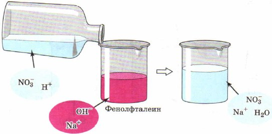

Насыщенным называют такой раствор, в котором при данной температуре вещество
больше не растворяется.
Ненасыщенным называют такой раствор, в котором при данной температуре находится
меньше растворяемого вещества, чем в его насыщенном растворе.
Пересыщенным называют такой раствор, в котором при данной температуре находится
в растворённом состоянии больше вещества, чем в его насыщенном растворе при тех же условиях.
Реакции между ионами называют ионными реакциями, а уравнения таких реакций — ионными уравнениями.
Реакции ионного обмена протекают до конца в тех случаях, когда образуется осадок, газ или малодиссоциирующее
вещество, например вода.

Реакцию взаимодействия сильной кислоты с щёлочью называют реакцией нейтрализации. Это частный случай реакции обмена.
1. Реакции в водных растворах электролитов являются реакциями между ионами, а потому их изображают в виде ионных уравнений.
2. Реакции ионного обмена в растворах электролитов практически необратимо протекают только в том случае, если в результате
образуется осадок, газ или малодиссоциирую-щее вещество (например, вода).